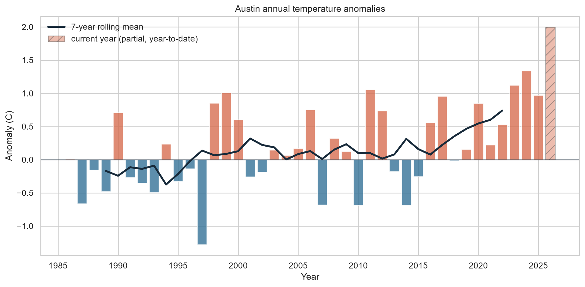
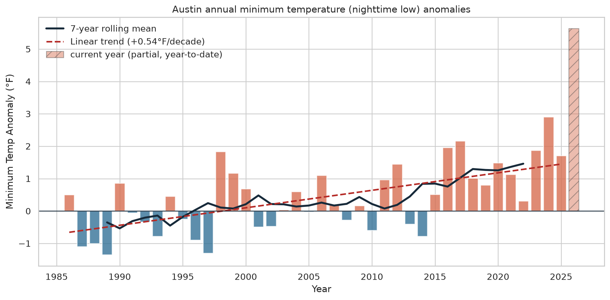
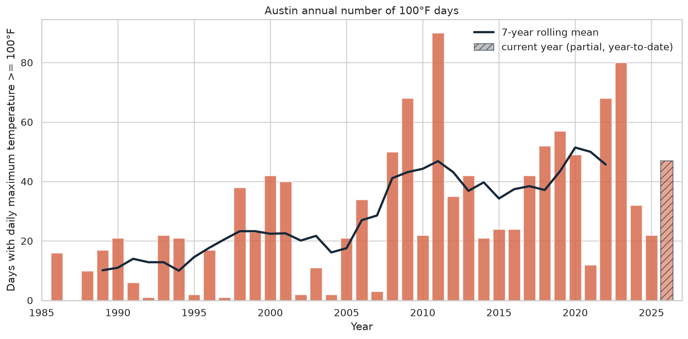
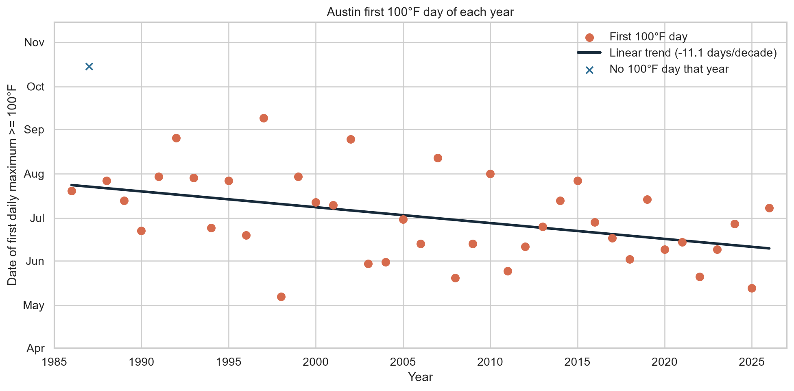
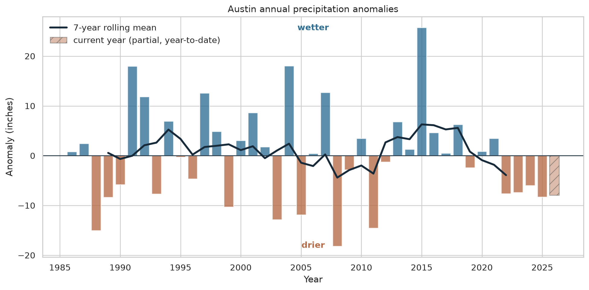
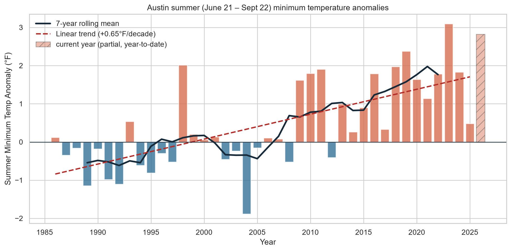

Annual temperature anomalies

Yearly mean temperature compared with the 1985-2014 baseline.
Austin, Texas / Camp Mabry station 72254
A clear-eyed look at temperature, nighttime lows, precipitation, and extreme-heat days across the local station record.
Explore the record01 / The signals
Annual summaries turn thousands of daily observations into a few signals worth watching.

Yearly mean temperature compared with the 1985-2014 baseline.

Nighttime lows are warming faster than the annual mean.

Each bar counts days with a daily maximum of at least 100°F.

The first 100°F day has trended earlier, by about 11 days per decade since 1986.

Rainfall varies widely from year to year without a simple story.

A focused view of minimum temperatures during astronomical summer.
02 / Read the record
Daily observations from Meteostat, Austin Camp Mabry station 72254. The data is refreshed through the current date.
Anomalies use the fixed 1985-2014 average. Positive values are warmer, wetter, or otherwise above that reference.
This is one local station, not a regional assessment. The summaries describe patterns; they do not establish cause.